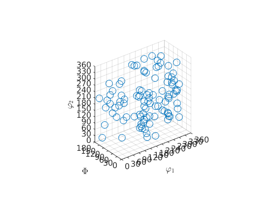

class representing orientations
Contents
Class Description
The class quaternion allows working with rotations in MTEX, as they occur e.g. as crystal orientation or symmetries. Quaternions may be multiplied with [[vector3d_index.html,three-dimensional vecotors]] which means rotating the vector or may be multiplied with another quaternion which means to concatenate both rotations.
SUB: Defining quaternions
The standard way is to define a quaternion q is to give its coordinates (a,b,c,d). However, making use of one of the following conversion methods is much more human readable.
q = [[quaternion.quaternion.html,quaternion]](a,b,c,d) % by coordinates q = [[axis2quat.html,axis2quat]](axis,angle); % by rotational axis and rotational angle q = [[euler2quat.html,euler2quat]](alpha,beta,gamma) % by Euler angles q = [[Miller2quat.html,Miller2quat]]([h k l],[u v w],symmetry); % by Miller indece q = [[quaternion.id.html,quaternion.id]]; % identical quaternion q = [[vec42quat.html,vec42quat]](u1,v1,u2,v2); % by four vectors
Additional methods to define a rotation are [[hr2quat.html,hr2quat]] and [[vec42quat.html,vec42quat]]. Using the brackets q = [q1,q2] two quaternions can be concatened. Now each single quaternion is accesable via q(1) and q(2).
SUB: Calculating with three dimensional vectors
Besides the standard linear algebra operations there are also the following functions available in MTEX.
[[quaternion.angle.html,angle]](q); % rotational angle [[quaternion.axis.html,axis]](q); % rotational axis [[quaternion.inverse.html,inverse]](q); % inverse rotation
SUB: Conversion
There are methods to transform quaternion in almost any other parameterization of rotations as they are:
[[quaternion.Euler.html,Euler]](q) % in Euler angle [[quaternion.Rodrigues.html,Rodrigues]](q) % in Rodrigues parameter
SUB: Plotting quaternions
The [[quaternion.plot.html,plot]] function allows you to visualize an quaternion by plotting how the standard basis x,y,z transforms under the rotation.
plot(quaternion.rand(100))
Complete Function list
| EinsteinSum | tensor multiplication according to Einstein summation |
| Euler | quaternion to euler angle |
| Rodrigues | quaternion to rodrigues representation |
| angle | calcualtes the rotational angle between rotations q1 and q2 |
| angle_outer | calcualtes the rotational angle between all rotations q1 and q2 |
| axis | rotational axis of the quaternion |
| calcVoronoi | compute the the Voronoi decomposition for unit quaternions |
| cat | implement cat for quaternion |
| char | quaternion to char |
| cross | pointwise cross product of three quaternions |
| ctranspose | transpose quaternion |
| display | standart output |
| dot | inner product of quaternions g1 and g2 |
| dot_angle | compute minimum q1 . q2 modulo rotation about zaxis and angle omega |
| dot_outer | outer inner product between two quaternions |
| double | quaternion to double |
| end | overloads end function |
| eq | ? q1 == q2 |
| export | quaternions to a ascii file |
| find | return indece and distance of all nodes within a eps neighborhood |
| geodesic | Calculats the rotation, which is described by the geodesic |
| horzcat | implements [q1,q2,q3..] |
| inv | quaternion of the inverse roation |
| isempty | overloads isempty |
| isnan | check for nan values |
| length | overloads length |
| log | the logarithmic map that translates a rotation into a rotation vector |
| logm | the logarithmic map that translates a rotation into a spin tensor |
| matrix | quaternion to direction cosine matrix conversion |
| mean | of a list of quaternions, principle axes and moments of inertia |
| mean_CS | fast mean of |
| minus | overloads minus |
| mpower | q^n |
| mrdivide | scalar division |
| mtimes | quaternionen multiplication q1 * q2 |
| ndims | overloads ndims |
| ne | q1 ~= q2 ? |
| norm | quaternion norm sqrt(a^2+b^2+c^2+c^2) |
| normalize | quaternion |
| permute | overloads permute |
| perturbe | pertube data randomly by epsilon |
| plus | pointwise addition |
| power | q.^n |
| prod | overloads q1 * q2 * q3 |
| project2EulerFR | projects quaternions to a fundamental region |
| project2FundamentalRegion | projects quaternions to a fundamental region |
| qmatrix | returns the quaternion multiplication matrix |
| returns w * q' * q | |
| rdivide | scalar division |
| real | part of of quaternion |
| repmat | overloads repmat |
| reshape | overloads reshape |
| scatter | plot function |
| setSubSet | indexing of quaternions |
| size | overloads size |
| subSet | indexing of quaternions |
| subsasgn | overloads subsasgn |
| subsref | overloads subsref |
| sum | overloads sum |
| symmetrise | symmetrcially equivalent orientations |
| times | quaternion .* quaternion and quaternion .* vector3d |
| transpose | array of quaternions |
| uminus | overload unitary minus |
| unique | disjoint list of quaternions |
| vertcat | implements [q1;q2;q3..] |